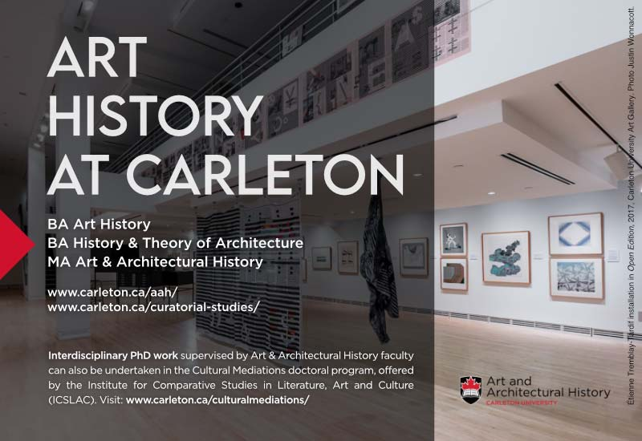
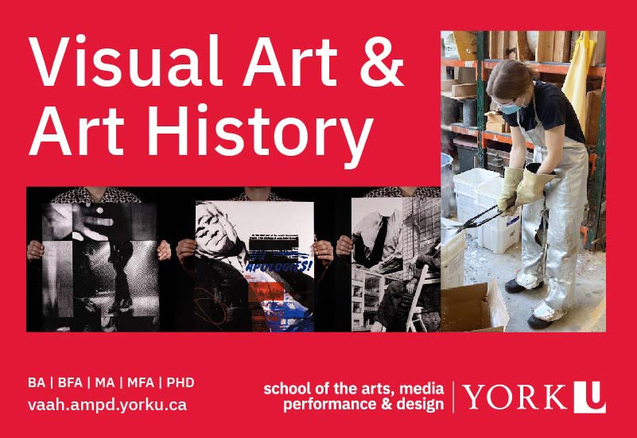
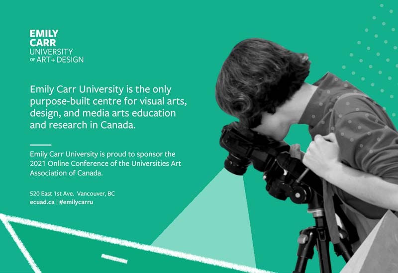

Schedule
Please join & register
All sessions broadcast via zoom
All times PDT
purple are free & public
See Conference Drive
-
wednesday october 20
9:30 – 11:00
Sessions A
11:30 – 13:00
Sessions B
B.1 Lounge and Info Desk / Salon et bureau d'information
B.4 Borders and Migrations in Latin American Art and Culture
B.5 Feeding the Fish: COVID, Surveillance Capitalism, Creative Practice, and the Digital Encounter
B.6 Systems of Value: Creating a Market for Photography
B.7 ROUNDTABLE Creative Methods for Disrupting Institutional Protocols
advertisement
 -
thursday october 21
9:00 – 10:30
Sessions C
C.1 Lounge and Info Desk / Salon et bureau d'information
C.2 Fire and Ice: Elemental Art and Its Histories,
Part 1 C.3 Sacred to Death: On Horror, Art, and Colonialism / Sacré peur: horreur, art, et colonialisme
C.5 The Aesthetics and Politics of Walking Research-Creation
C.6 Historians of Eighteenth-Century Art and Architecture (HECAA) Open Panel
11:30 – 13:00
Sessions D
D.1 Lounge and Info Desk / Salon et bureau d'information
D.2 Fire and Ice: Elemental Art and Its Histories,
Part 2 D.3 Sacred to Death: On Horror, Art, and Colonialism,
Part 2 / Sacré peur: horreur, art, et colonialisme,partie 2 D.4 Documentary Photography and Film in Cold War Latin America
D.5 ROUNDTABLE Research-Creation Caucus: How to be Artist-Scholars In and Outside of the Academy
D.6 Where are Working Class Voices in Contemporary Culture?
D.7 Graduate Student Lightning Talks / Exposés éclairs des étudiant·es de cycles supérieurs
advertisement
 -
friday october 22
9:00 – 10:30
Sessions E
E.1 Lounge and Info Desk / Salon et bureau d'information
E.2 Arts of Living on a Damaged Planet,
Part 1 E.3 Sites of Photographic Knowledge: Studios and Networks,
Part 1 E.4 ROUNDTABLE In Relation: Conversations on Indigenous Performance Art
E.5 Hidden in Plain Sight/Site: Objects, Architectures, Narratives of the Interstices
E.6 ROUNDTABLE Envisioning First Year
E.7 Graduate Student Lightning Talks / Exposés éclairs des étudiant·es de cycles supérieurs
11:30 – 13:00
Sessions F
F.1 Lounge and Info Desk / Salon et bureau d'information
F.2 Arts of Living on a Damaged Planet,
Part 2 F.3 Sites of Photographic Knowledge: Studios and Networks,
Part 2 F.4 Fast Ponies and War Bonnets: Indigenous Ledger Drawings
F.5 Byung-Chul Han and Contemporary Art
F.6 ROUNDTABLE Radical Pedagogy: Strategies for Teaching Through Curation
F.7 Graduate Student Lightning Talks / Exposés éclairs des étudiant·es de cycles supérieurs
-
saturday october 23
9:00 – 10:30
Sessions G
11:30 – 13:00
Sessions H
advertisement
